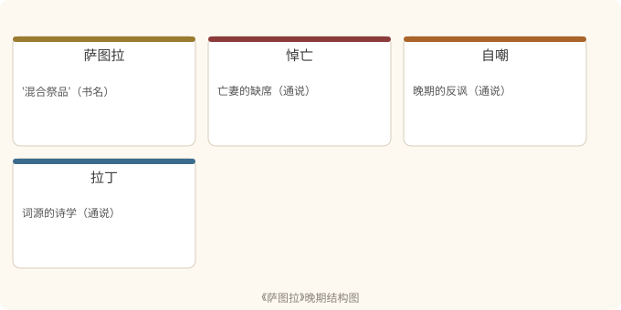

萨图拉
一、基本信息
| 作者 | 埃乌杰尼奥·蒙塔莱 |
|---|---|
| 成书/出版 | 1962年（Britannica B341：Satura (1962)） Eugenio Montale — Encyclopaedia Britannica（百科全书） |
| 国别/地区 | 意大利 |
| 时代 | 近代 · 20世纪60年代 |
| 体裁 | 诗集 |
| 语言 | 意大利语 |

《萨图拉》晚期结构图（主题·结构图）
二、创作背景
Britannica（B341）：Satura (1962)——蒙塔莱晚期诗集。
Britannica（B341）：蒙塔莱——1975诺奖；'progressively more introverted and obscure'。
题材（通说待核）：'萨图拉'（拉丁语'混合祭品'说——通说待核）：悼亡妻与自嘲。
三、内容脉络
（通说待核）悼亡妻莫塞利的诗（与Xenia 1966并读——B341交叉）。
（通说待核）'拉丁语satura'的词源：混合的祭品。
四、主要人物表
| 人物 | 身份 | 说明 |
|---|---|---|
| 抒情'我' | 晚期的隐逸诗人 | （B341 语系） |
五、主题与艺术特点
- 悼亡与自嘲（通说待核）。
- '拉丁'词源的诗学（书名语境——通说待核）。
- '更内省'（B341：more introverted）。
六、影响与评论
- Britannica：Satura (1962)（B341）。
Eugenio Montale — Encyclopaedia Britannica（百科全书） - Britannica：1975诺奖（B341 交叉）。
Eugenio Montale — Encyclopaedia Britannica（百科全书）
七、阅读建议
难点
- 晚期语体的'闲谈'化（通说待核）。
- 拉丁词源。
- 《萨图拉》中译名待核。
- 意大利文原版。
蒙塔莱晚期；与《境遇》对读。
八、待核实
- 'satura'词源说核对（通说）。
- 1962年出版细节待核。
- 悼亡诗篇目待核。